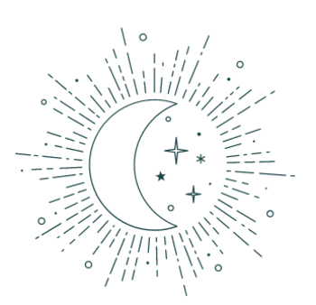
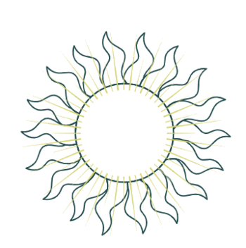
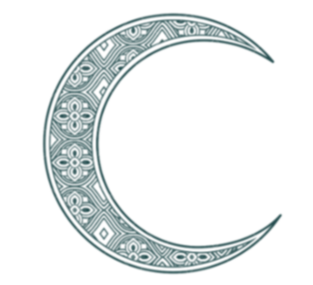

En la astrología, el ascendente es uno de los ángulos principales en una carta natal o carta astral. Su cúspide corta el signo del Zodíaco que se encuentra en el Horizonte Este en el momento del nacimiento. Siempre en una Carta astral ocupa la Primera Casa, y por lógica es opuesto a la Séptima Casa.

Tu signo solar es el punto del firmamento donde se encontraba el Sol en el momento de tu nacimiento. Identifica lo que más nos representa como persona: el yo, la personalidad, la identidad y el ego.

Tu signo lunar es el signo del zodíaco donde estaba la luna en el momento de tu nacimiento. Es el alma de tu identidad, la parte subconsciente. Eso que podés mantener oculto ante los demás. Eso, a diferencia de tu signo solar que mira hacia afuera.